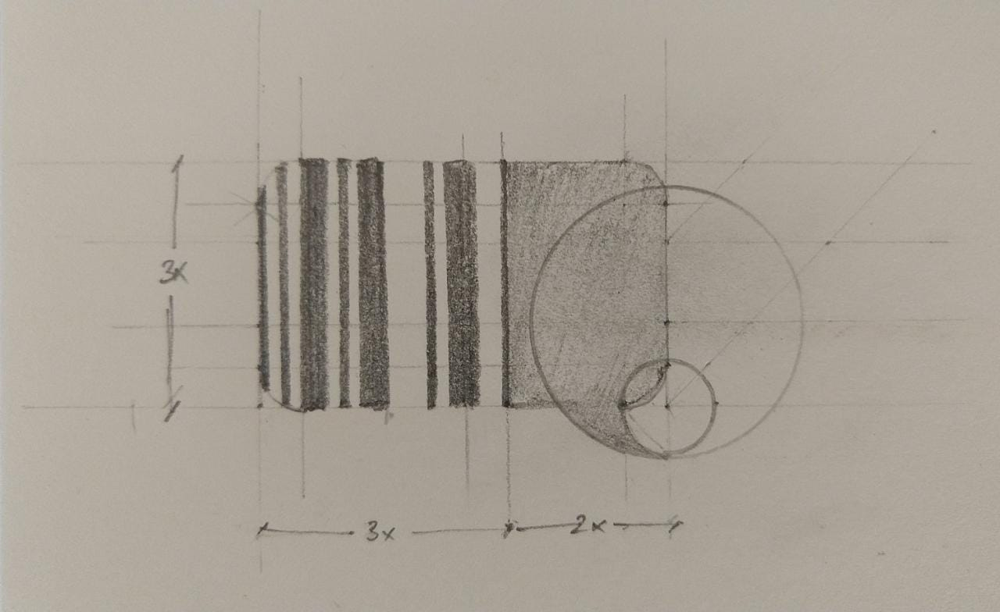
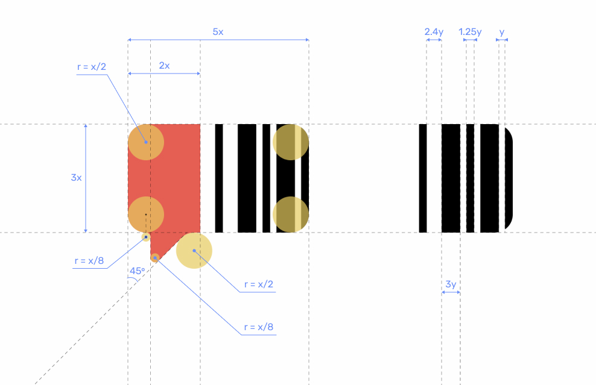
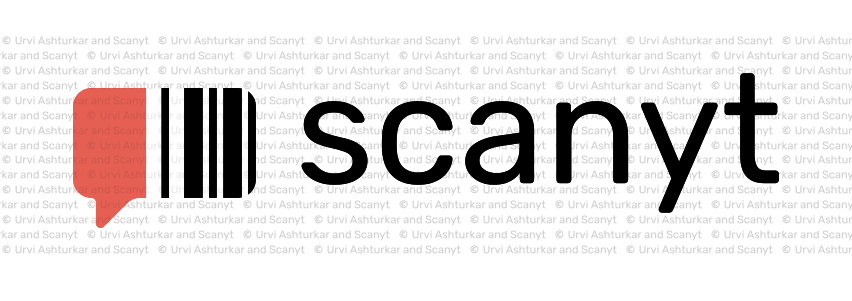
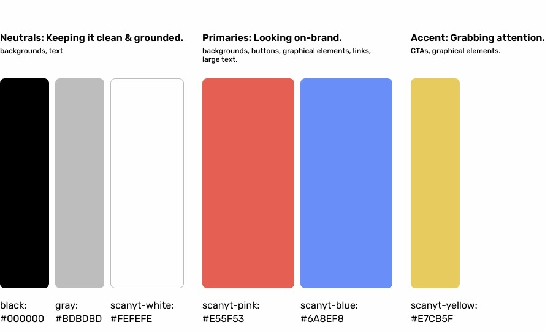

I did this project for a startup developing a mobile application that they named "Scanyt". This project is still under development, so I can only share the limited information presented here. I was the sole branding designer on this project, and development was going to be outsourced to another team. I worked directly with the founder of Scanyt.
Approach:
Understanding the vision Desk research Concept sketches Refinement Preparing deliverables
I talked to the founder of Scanyt to understand their vision of the brand, their target audience and use cases. I had them imagine their app as a person and then fill out a worksheet describing this "person's" personality.
User interviews were not covered in the budget, so I researched 3 direct competitors to Scanyt and analyzed the reviews on their Play Store and App Store listings.
I also researched 6 mobile apps with a similar offering in different domains to reference the features and UI patterns that they used.
High-level learning: Scanyt is simple, confident, competent and interesting. The tone of voice should be friendly with informal language, but avoiding slang. UI flows should be kept minimal and quick in serving up the desired information.
Based on the brand personality derived from the first exercise, I collected visual inspiration and prepared a moodboard.
I prepared 4 initial sketches for logo concept ideas derived from the initial brand personality discovery and compiled inspiration for visual style. After a discussion, we selected one concept. I prepared several variations of that concept and after another discussion, finalized a symbol and type for the logo. I chose to construct the proportions of the symbol using the golden ratio.

I selected Rubik as the logotype - a friendly yet practical sans serif in the Normal/Regular style.
 Colour palette: I used Pearson's styleguide which is available online, as a reference for information to include. Since Scanyt was going to be a mobile application, I also included some extra guidelines on UI best practices. Here is a list of my final deliverables -
"Urvi delivered exceptional branding and UX work for us, going above and beyond. We were presented with multiple options that catered to our different market segments. She also studied our competition and gave valuable suggestions on how we could be more effective in our messaging. Would highly recommend Urvi for any or all of your design needs."
Founder, Scanyt.com (under development)